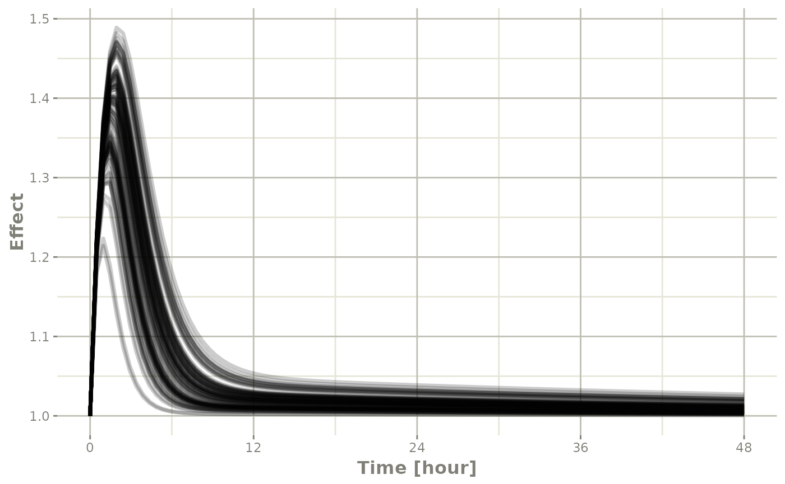
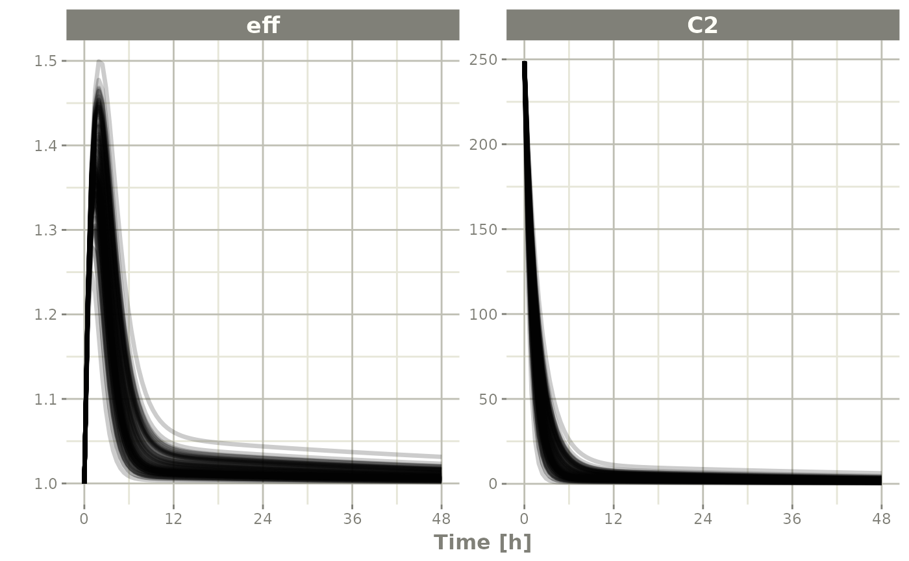
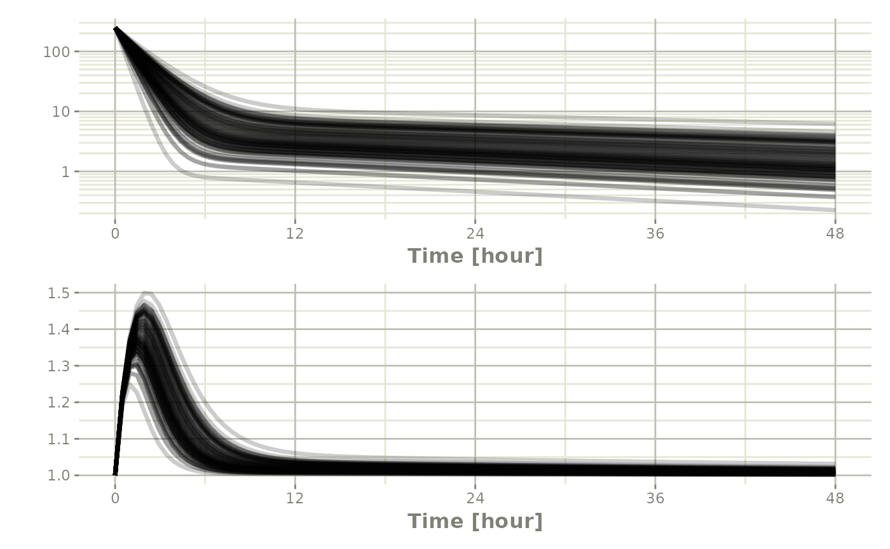
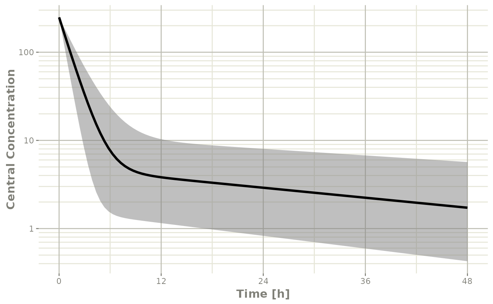
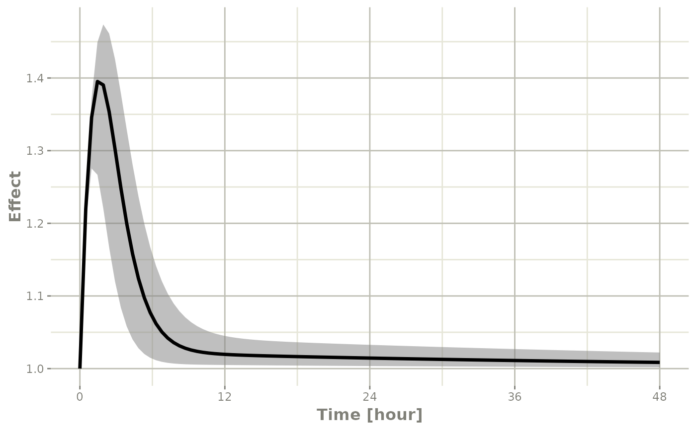
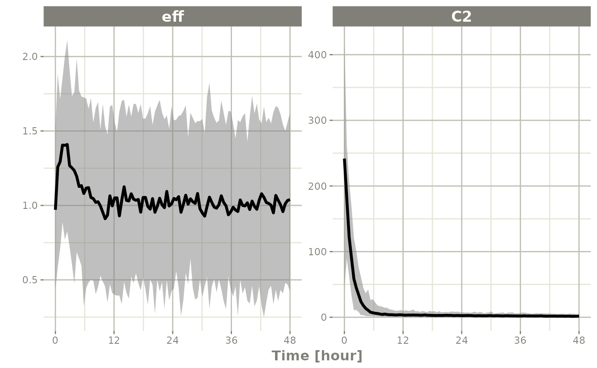
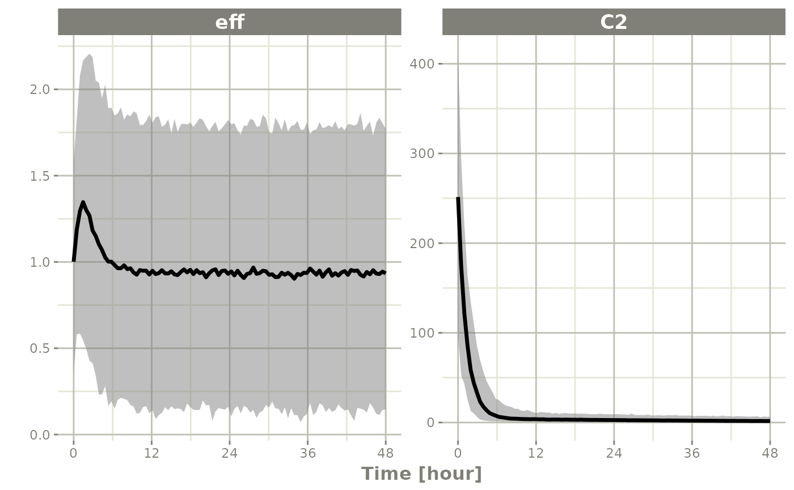
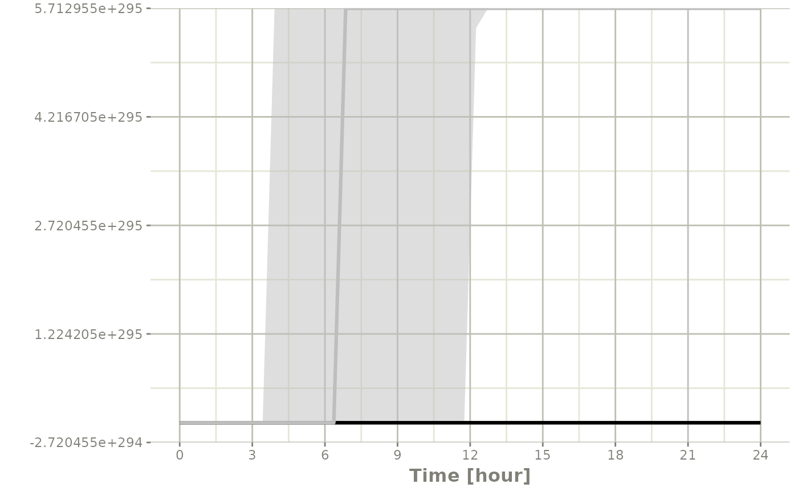

Population Simulations with rxode2
Simulation of Variability with rxode2
In pharmacometrics the nonlinear-mixed effect modeling software (like nlmixr) characterizes the between-subject variability. With this between subject variability you can simulate new subjects.
Assuming that you have a 2-compartment, indirect response model, you can set create an rxode2 model describing this system below:
Setting up the rxode2 model
library(rxode2)
#> rxode2 2.0.14.9000 using 2 threads (see ?getRxThreads)
#> no cache: create with `rxCreateCache()`
set.seed(32)
rxSetSeed(32)
mod <- function() {
ini({
KA <- 2.94E-01
TCl <- 1.86E+01
# between subject variability
eta.Cl ~ 0.4^2
V2 <- 4.02E+01
Q <- 1.05E+01
V3 <- 2.97E+02
Kin <- 1
Kout <- 1
EC50 <- 200
})
model({
C2 <- centr/V2
C3 <- peri/V3
CL <- TCl*exp(eta.Cl) ## This is coded as a variable in the model
d/dt(depot) <- -KA*depot
d/dt(centr) <- KA*depot - CL*C2 - Q*C2 + Q*C3
d/dt(peri) <- Q*C2 - Q*C3
d/dt(eff) <- Kin - Kout*(1-C2/(EC50+C2))*eff
eff(0) <- 1
})
}Simulating
The next step to simulate is to create the dosing regimen for overall simulation:
If you wish, you can also add sampling times (though rxode2 can fill these in for you):
Note the et takes similar arguments as seq
when adding sampling times. There are more methods to adding sampling
times and events to make complex dosing regimens (See the event vignette). This includes ways to
add variability to the both
the sampling and dosing times).
Once this is complete you can simulate using the rxSolve
routine:
sim <- rxSolve(mod, ev, nSub=100)
#> using C compiler: ‘gcc (Ubuntu 11.4.0-1ubuntu1~22.04) 11.4.0’To quickly look and customize your simulation you use the default
plot routine. Since this is an rxode2 object, it will
create a ggplot2 object that you can modify as you wish.
The extra parameter to the plot tells
rxode2/R what piece of information you are
interested in plotting. In this case, we are interested in looking at
the derived parameter C2:
Checking the simulation with plot
library(ggplot2)
## The plots from rxode2 are ggplots so they can be modified with
## standard ggplot commands.
plot(sim, C2, log="y") +
ylab("Central Compartment") 
Of course this additional parameter could also be a state value, like
eff:
## They also takes many of the standard plot arguments; See ?plot
plot(sim, eff, ylab="Effect")
Or you could even look at the two side-by-side:
plot(sim, C2, eff)
Or stack them with patchwork

Processing the data to create summary plots
Usually in pharmacometric simulations it is not enough to simply simulate the system. We have to do something easier to digest, like look at the central and extreme tendencies of the simulation.
Since the rxode2 solve object is a type of data frame
It is now straightforward to perform calculations and generate plots with the simulated data. You can
Below, the 5th, 50th, and 95th percentiles of the simulated data are plotted.
confint(sim, "C2", level=0.95) %>%
plot(ylab="Central Concentration", log="y")
#> ! in order to put confidence bands around the intervals, you need at least 2500 simulations
#> summarizing data...done
confint(sim, "eff", level=0.95) %>%
plot(ylab="Effect")
#> ! in order to put confidence bands around the intervals, you need at least 2500 simulations
#> summarizing data...done
Note that you can see the parameters that were simulated for the example
head(sim$param)
#> sim.id KA TCl V2 Q V3 Kin Kout EC50 eta.Cl
#> 1 1 0.294 18.6 40.2 10.5 297 1 1 200 -0.3163542
#> 2 2 0.294 18.6 40.2 10.5 297 1 1 200 0.1880698
#> 3 3 0.294 18.6 40.2 10.5 297 1 1 200 0.1536777
#> 4 4 0.294 18.6 40.2 10.5 297 1 1 200 0.6535432
#> 5 5 0.294 18.6 40.2 10.5 297 1 1 200 -0.5758445
#> 6 6 0.294 18.6 40.2 10.5 297 1 1 200 -0.1948311Simulation of unexplained variability (sigma)
In addition to conveniently simulating between subject variability, you can also easily simulate unexplained variability.
One way to do that is to create a rxode2 model with the endpoints defined. Model piping can do this while keeping the model intact:
mod2 <- mod %>%
model(eff ~ add(eff.sd), append=TRUE) %>%
model(C2 ~ prop(prop.sd), append=TRUE) %>%
ini(eff.sd=sqrt(0.1), prop.sd=sqrt(0.1))
#> ℹ add residual parameter `eff.sd` and set estimate to 1
#> ℹ add residual parameter `prop.sd` and set estimate to 1
#> ℹ change initial estimate of `eff.sd` to `0.316227766016838`
#> ℹ change initial estimate of `prop.sd` to `0.316227766016838`You can see how the dataset should be defined with
$multipleEndpoint:
mod2$multipleEndpoint
#> variable cmt dvid*
#> 1 eff ~ … cmt='eff' or cmt=4 dvid='eff' or dvid=1
#> 2 C2 ~ … cmt='C2' or cmt=5 dvid='C2' or dvid=2Here you see the endpoints should be defined for eff and
C2:
ev <- et(amountUnits="mg", timeUnits="hours") %>%
et(amt=10000, cmt="centr") %>%
et(seq(0,48, length.out=100), cmt="eff") %>%
et(seq(0,48, length.out=100), cmt="C2")Which allows you to solve the system:
sim <- rxSolve(mod2, ev, nSub=100)
#> using C compiler: ‘gcc (Ubuntu 11.4.0-1ubuntu1~22.04) 11.4.0’Since this is simulated from a model with the residual specification
included and a multiple endpoint model, you can summarize for each
endpoint by simply taking a confidence interval of
"sim":
s <- confint(sim, "sim")
#> ! in order to put confidence bands around the intervals, you need at least 2500 simulations
#> summarizing data...done
plot(s)
If you want to subset to a specific endpoint, like eff
you can create the confidence interval for only that endpoint by using
the specification sim.eff, where the endpoint name is
separated from sim by a dot:
seff <- confint(sim, "sim.eff")
#> ! in order to put confidence bands around the intervals, you need at least 2500 simulations
#> summarizing data...done
plot(seff)
Simulation of Individuals
Sometimes you may want to match the dosing and observations of
individuals in a clinical trial. To do this you will have to create a
data.frame using the rxode2 event specification as well as
an ID column to indicate an individual. The rxode2 event
vignette talks more about how these datasets should be created.
library(dplyr)
#>
#> Attaching package: 'dplyr'
#> The following objects are masked from 'package:stats':
#>
#> filter, lag
#> The following objects are masked from 'package:base':
#>
#> intersect, setdiff, setequal, union
ev1 <- et(amountUnits="mg", timeUnits="hours") %>%
et(amt=10000, cmt=2) %>%
et(0,48,length.out=10)
ev2 <- et(amountUnits="mg", timeUnits="hours") %>%
et(amt=5000, cmt=2) %>%
et(0,48,length.out=8)
dat <- rbind(data.frame(ID=1, ev1$get.EventTable()),
data.frame(ID=2, ev2$get.EventTable()))
## Note the number of subject is not needed since it is determined by the data
sim <- rxSolve(mod, dat)
#> using C compiler: ‘gcc (Ubuntu 11.4.0-1ubuntu1~22.04) 11.4.0’
sim %>% select(id, time, eff, C2)
#> id time eff C2
#> 1 1 0.000000 [h] 1.000000 248.756219
#> 2 1 5.333333 [h] 1.085052 7.937758
#> 3 1 10.666667 [h] 1.018563 3.413740
#> 4 1 16.000000 [h] 1.015185 2.963251
#> 5 1 21.333333 [h] 1.013432 2.624691
#> 6 1 26.666667 [h] 1.011902 2.325724
#> 7 1 32.000000 [h] 1.010546 2.060828
#> 8 1 37.333333 [h] 1.009344 1.826102
#> 9 1 42.666667 [h] 1.008280 1.618112
#> 10 1 48.000000 [h] 1.007337 1.433813
#> 11 2 0.000000 [h] 1.000000 124.378109
#> 12 2 6.857143 [h] 1.051433 6.777712
#> 13 2 13.714286 [h] 1.018211 3.493754
#> 14 2 20.571429 [h] 1.015506 3.045168
#> 15 2 27.428571 [h] 1.013772 2.706558
#> 16 2 34.285714 [h] 1.012247 2.406904
#> 17 2 41.142857 [h] 1.010891 2.140458
#> 18 2 48.000000 [h] 1.009685 1.903509Simulation of Clinical Trials
By either using a simple single event table, or data from a clinical trial as described above, a complete clinical trial simulation can be performed.
Typically in clinical trial simulations you want to account for the uncertainty in the fixed parameter estimates, and even the uncertainty in both your between subject variability as well as the unexplained variability.
rxode2 allows you to account for these uncertainties by
simulating multiple virtual “studies,” specified by the parameter
nStud. Each of these studies samples a realization of fixed
effect parameters and covariance matrices for the between subject
variability(omega) and unexplained variabilities
(sigma). Depending on the information you have from the
models, there are a few strategies for simulating a realization of the
omega and sigma matrices.
The first strategy occurs when either there is not any standard errors for standard deviations (or related parameters), or there is a modeled correlation in the model you are simulating from. In that case the suggested strategy is to use the inverse Wishart (parameterized to scale to the conjugate prior)/scaled inverse chi distribution. this approach uses a single parameter to inform the variability of the covariance matrix sampled (the degrees of freedom).
The second strategy occurs if you have standard errors on the
variance/standard deviation with no modeled correlations in the
covariance matrix. In this approach you perform separate simulations for
the standard deviations and the correlation matrix. First you simulate
the variance/standard deviation components in the thetaMat
multivariate normal simulation. After simulation and transformation to
standard deviations, a correlation matrix is simulated using the degrees
of freedom of your covariance matrix. Combining the simulated standard
deviation with the simulated correlation matrix will give a simulated
covariance matrix. For smaller dimension covariance matrices (dimension
< 10x10) it is recommended you use the lkj distribution
to simulate the correlation matrix. For higher dimension covariance
matrices it is suggested you use the inverse wishart distribution
(transformed to a correlation matrix) for the simulations.
The covariance/variance prior is simulated from rxode2s
cvPost() function.
Simulation from inverse Wishart correlations
An example of this simulation is below:
## Creating covariance matrix
tmp <- matrix(rnorm(8^2), 8, 8)
tMat <- tcrossprod(tmp, tmp) / (8 ^ 2)
dimnames(tMat) <- list(NULL, names(mod2$theta)[1:8])
sim <- rxSolve(mod2, ev, nSub=100, thetaMat=tMat, nStud=10,
dfSub=10, dfObs=100)
s <-sim %>% confint("sim")
#> ! in order to put confidence bands around the intervals, you need at least 2500 simulations
#> summarizing data...done
plot(s)
If you wish you can see what omega and
sigma was used for each virtual study by accessing them in
the solved data object with $omega.list and
$sigma.list:
head(sim$omegaList)
#> [[1]]
#> eta.Cl
#> eta.Cl 0.1676778
#>
#> [[2]]
#> eta.Cl
#> eta.Cl 0.2917085
#>
#> [[3]]
#> eta.Cl
#> eta.Cl 0.1776813
#>
#> [[4]]
#> eta.Cl
#> eta.Cl 0.1578682
#>
#> [[5]]
#> eta.Cl
#> eta.Cl 0.1845614
#>
#> [[6]]
#> eta.Cl
#> eta.Cl 0.3282268
head(sim$sigmaList)
#> [[1]]
#> rxerr.eff rxerr.C2
#> rxerr.eff 1.12416983 0.04197039
#> rxerr.C2 0.04197039 0.97293971
#>
#> [[2]]
#> rxerr.eff rxerr.C2
#> rxerr.eff 0.84311199 -0.06277998
#> rxerr.C2 -0.06277998 1.22140938
#>
#> [[3]]
#> rxerr.eff rxerr.C2
#> rxerr.eff 0.9834771 0.1060251
#> rxerr.C2 0.1060251 1.0024751
#>
#> [[4]]
#> rxerr.eff rxerr.C2
#> rxerr.eff 1.25556975 0.07690868
#> rxerr.C2 0.07690868 0.90991261
#>
#> [[5]]
#> rxerr.eff rxerr.C2
#> rxerr.eff 1.116261 -0.184748
#> rxerr.C2 -0.184748 1.320288
#>
#> [[6]]
#> rxerr.eff rxerr.C2
#> rxerr.eff 0.93539238 0.07270049
#> rxerr.C2 0.07270049 0.98648424You can also see the parameter realizations from the
$params data frame.
Simulate using variance/standard deviation standard errors
Lets assume we wish to simulate from the nonmem run included in xpose
First we setup the model; Since we are taking this from nonmem and
would like to use the more free-form style from the classic
rxode2 model we start from the classic model:
rx1 <- rxode2({
cl <- tcl*(1+crcl.cl*(CLCR-65)) * exp(eta.cl)
v <- tv * WT * exp(eta.v)
ka <- tka * exp(eta.ka)
ipred <- linCmt()
obs <- ipred * (1 + prop.sd) + add.sd
})
#> using C compiler: ‘gcc (Ubuntu 11.4.0-1ubuntu1~22.04) 11.4.0’Next we input the estimated parameters:
theta <- c(tcl=2.63E+01, tv=1.35E+00, tka=4.20E+00, tlag=2.08E-01,
prop.sd=2.05E-01, add.sd=1.06E-02, crcl.cl=7.17E-03,
## Note that since we are using the separation strategy the ETA variances are here too
eta.cl=7.30E-02, eta.v=3.80E-02, eta.ka=1.91E+00)And also their covariances; To me, the easiest way to create a named
covariance matrix is to use lotri():
thetaMat <- lotri(
tcl + tv + tka + tlag + prop.sd + add.sd + crcl.cl + eta.cl + eta.v + eta.ka ~
c(7.95E-01,
2.05E-02, 1.92E-03,
7.22E-02, -8.30E-03, 6.55E-01,
-3.45E-03, -6.42E-05, 3.22E-03, 2.47E-04,
8.71E-04, 2.53E-04, -4.71E-03, -5.79E-05, 5.04E-04,
6.30E-04, -3.17E-06, -6.52E-04, -1.53E-05, -3.14E-05, 1.34E-05,
-3.30E-04, 5.46E-06, -3.15E-04, 2.46E-06, 3.15E-06, -1.58E-06, 2.88E-06,
-1.29E-03, -7.97E-05, 1.68E-03, -2.75E-05, -8.26E-05, 1.13E-05, -1.66E-06, 1.58E-04,
-1.23E-03, -1.27E-05, -1.33E-03, -1.47E-05, -1.03E-04, 1.02E-05, 1.67E-06, 6.68E-05, 1.56E-04,
7.69E-02, -7.23E-03, 3.74E-01, 1.79E-03, -2.85E-03, 1.18E-05, -2.54E-04, 1.61E-03, -9.03E-04, 3.12E-01))
evw <- et(amount.units="mg", time.units="hours") %>%
et(amt=100) %>%
## For this problem we will simulate with sampling windows
et(list(c(0, 0.5),
c(0.5, 1),
c(1, 3),
c(3, 6),
c(6, 12))) %>%
et(id=1:1000)
## From the run we know that:
## total number of observations is: 476
## Total number of individuals: 74
sim <- rxSolve(rx1, theta, evw, nSub=100, nStud=10,
thetaMat=thetaMat,
## Match boundaries of problem
thetaLower=0,
sigma=c("prop.sd", "add.sd"), ## Sigmas are standard deviations
sigmaXform="identity", # default sigma xform="identity"
omega=c("eta.cl", "eta.v", "eta.ka"), ## etas are variances
omegaXform="variance", # default omega xform="variance"
iCov=data.frame(WT=rnorm(1000, 70, 15), CLCR=rnorm(1000, 65, 25)),
dfSub=74, dfObs=476);
#> ℹ thetaMat has too many items, ignored: 'tlag'
print(sim)
#> ── Solved rxode2 object ──
#> ── Parameters ($params): ──
#> # A tibble: 10,000 × 9
#> sim.id id tcl crcl.cl eta.cl tv eta.v tka eta.ka
#> <int> <fct> <dbl> <dbl> <dbl> <dbl> <dbl> <dbl> <dbl>
#> 1 1 1 26.4 0.383 0.847 1.38 1.39 4.59 -1.13
#> 2 1 2 26.4 0.383 -0.733 1.38 1.01 4.59 -2.28
#> 3 1 3 26.4 0.383 -0.100 1.38 -0.676 4.59 1.72
#> 4 1 4 26.4 0.383 -0.276 1.38 0.484 4.59 2.08
#> 5 1 5 26.4 0.383 0.175 1.38 1.68 4.59 0.197
#> 6 1 6 26.4 0.383 0.215 1.38 0.872 4.59 -0.582
#> 7 1 7 26.4 0.383 -1.64 1.38 -1.45 4.59 0.415
#> 8 1 8 26.4 0.383 0.850 1.38 -0.509 4.59 -1.19
#> 9 1 9 26.4 0.383 0.486 1.38 -0.158 4.59 -0.404
#> 10 1 10 26.4 0.383 -0.705 1.38 -0.878 4.59 -1.64
#> # ℹ 9,990 more rows
#> ── Initial Conditions ($inits): ──
#> named numeric(0)
#>
#> Simulation with uncertainty in:
#> • parameters ($thetaMat for changes)
#> • omega matrix ($omegaList)
#> • sigma matrix ($sigmaList)
#>
#> ── First part of data (object): ──
#> # A tibble: 50,000 × 10
#> sim.id id time cl v ka ipred obs WT CLCR
#> <int> <int> [h] <dbl> <dbl> <dbl> <dbl> <dbl> <dbl> <dbl>
#> 1 1 1 0.0155 162. 345. 1.49 0.00659 0.460 62.2 69.3
#> 2 1 1 0.749 162. 345. 1.49 0.159 1.57 62.2 69.3
#> 3 1 1 1.02 162. 345. 1.49 0.170 -3.31 62.2 69.3
#> 4 1 1 3.41 162. 345. 1.49 0.0830 -0.702 62.2 69.3
#> 5 1 1 7.81 162. 345. 1.49 0.0109 0.933 62.2 69.3
#> 6 1 2 0.0833 209. 134. 0.470 0.0268 -0.665 35.7 105.
#> # ℹ 49,994 more rows
## Notice that the simulation time-points change for the individual
## If you want the same sampling time-points you can do that as well:
evw <- et(amount.units="mg", time.units="hours") %>%
et(amt=100) %>%
et(0, 24, length.out=50) %>%
et(id=1:100)
sim <- rxSolve(rx1, theta, evw, nSub=100, nStud=10,
thetaMat=thetaMat,
## Match boundaries of problem
thetaLower=0,
sigma=c("prop.sd", "add.sd"), ## Sigmas are standard deviations
sigmaXform="identity", # default sigma xform="identity"
omega=c("eta.cl", "eta.v", "eta.ka"), ## etas are variances
omegaXform="variance", # default omega xform="variance"
iCov=data.frame(WT=rnorm(100, 70, 15), CLCR=rnorm(100, 65, 25)),
dfSub=74, dfObs=476,
resample=TRUE)
#> ℹ thetaMat has too many items, ignored: 'tlag'
s <-sim %>% confint(c("ipred"))
#> summarizing data...
#> done
plot(s)
Simulate without uncertainty in omega or
sigma parameters
If you do not wish to sample from the prior distributions of either
the omega or sigma matrices, you can turn off
this feature by specifying the simVariability = FALSE
option when solving:
sim <- rxSolve(mod2, ev, nSub=100, thetaMat=tMat, nStud=10,
simVariability=FALSE)
s <-sim %>% confint(c("centr", "eff"))
#> ! in order to put confidence bands around the intervals, you need at least 2500 simulations
#> summarizing data...done
plot(s)
Note since realizations of omega and sigma
were not simulated, $omegaList and $sigmaList
both return NULL.